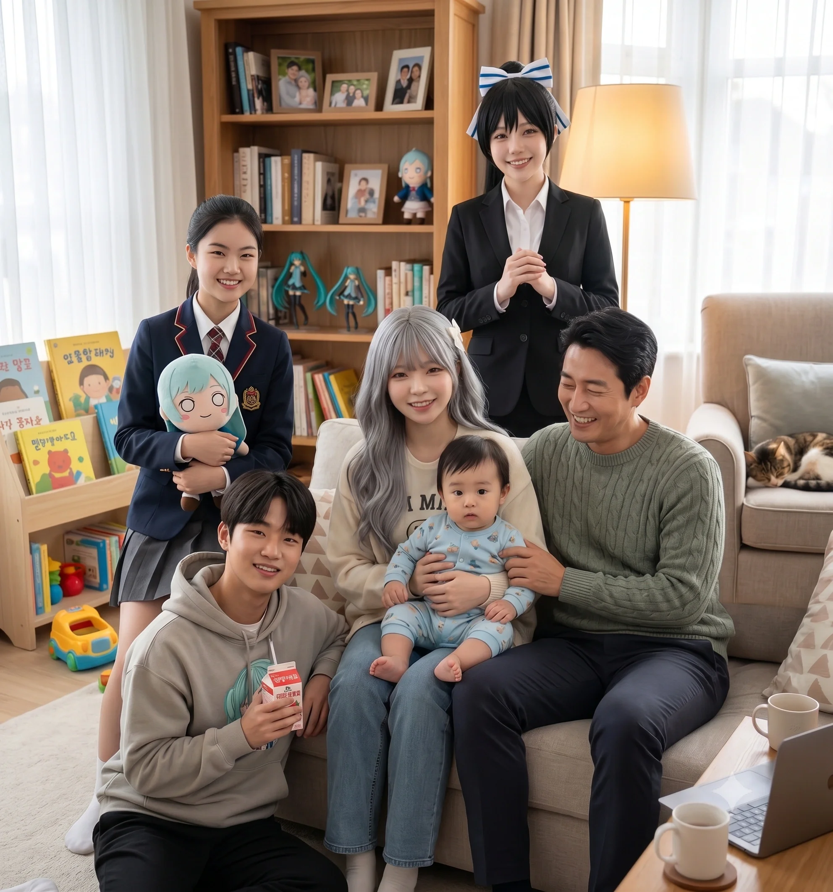

효빈광역시 서브컬처 최고 성지인 리에라몰의 점장 임세혁과 아내 연월엽 사이에서 태어난 넷째(막내딸). 2023년 12월 10일생으로 현재 당가어린이집에 재원 중인 3살 꼬마 천사다.
큰언니 임은혜와는 무려 17살 차이, 오빠 임승민과는 14살 차이, 셋째 언니 임은연과도 10살 차이가 나는 그야말로 '기적의 늦둥이'다. 빚더미와 오타쿠 혐오 문제로 파탄 직전이었던 임세혁 부부가 2022년 리에라몰 초대박 이후 극적으로 화해하며 낳은 결정체로, 존재 자체가 리에라몰 일가의 대통합과 사랑을 상징하는 마스코트다.
2021년까지만 해도 임세혁과 연월엽 부부는 서류상 도장만 찍지 않았을 뿐 이혼 직전의 심각한 위기를 겪고 있었다. 대출 이자와 빚더미에 시달리던 남편과, 스토커 트라우마 때문에 서브컬처를 극도로 혐오하던 아내의 갈등은 극한에 달해 매일 밤 고성이 오갔다. 그러나 2022년, 리에라몰이 오타쿠들의 성지로 급부상하며 수백억 원의 빚을 단숨에 청산하고 통장에 1,000억 단위의 현금 흑자가 찍히는 거대한 자본주의의 기적이 일어났다.
어마어마한 금융 치료(?)를 제대로 받은 아내 연월엽은 과거의 혐덕 성향을 모두 내다 버리고, "여보, 내가 다 미안해. 당신의 그 깊은 뚝심을 몰라봤어"라며 남편에게 뼈저린 도게자를 시전하며 눈물로 사과했다. 그리고 남편의 단단히 굳어버린 마음을 확실하게 녹이기 위해 '파격적이고 끈적한 밤의 특별 서비스'라는 초강수를 두었는데... 이 극적인 화해의 밤이 남편의 서러움을 달래주기 위해 너무나도 뜨겁고 격렬했던 나머지, 2023년에 부부 모두 30대 후반~40대를 바라보는 나이로 넷째를 임신하는 거대한 대형 사고를 치고 말았다.
임신 소식이 알려졌을 때 집안은 한바탕 대혼란으로 뒤집어졌다. 당시 고등학생이던 큰딸 은혜와 과학고 진학을 앞둔 아들 승민은 "우리 대학생(과고생)인데 갓난아기 독박 육아 짬처리당하게 생겼다 큥!!"이라며 거실 바닥을 구르며 절규했고, 연월엽 본인도 다 큰 장성한 자식들 앞에서 늦둥이를 가졌다는 사실에 수치심과 부끄러움으로 며칠을 앓아누웠다.
하지만 2023년 12월 10일, 시연이가 무사히 태어나고 산후조리원에서 아기의 꼬물거리는 배냇짓과 눈웃음을 본 순간, 육아의 공포에 떨던 온 가족의 멘탈이 완벽하게 심쿵하며 1초 만에 무장 해제되어 버렸다. 시연이는 그야말로 가문을 하나로 묶는 절대 권력의 아기 천사로 등극했다.

무려 17살 차이가 나는 큰언니 임은혜는 시연이가 태어나기 전까지만 해도 "나 내년에 대학생인데 기저귀 갈고 젖병 물리다가 내 꽃다운 청춘 다 끝났다 큥!!"이라며 바닥을 구르며 매일 밤 오열했다. 셋째 은연이가 태어났을 때 당했던 끔찍한 독박 육아의 트라우마 때문이었다. 하지만 시연이가 태어나 방긋방긋 웃어주자마자, 은혜는 외출할 때 명품 백 대신 자발적으로 아기 띠를 매고 다니는 중증 '동생 바보'이자 '시연 맘'으로 타락(?)하고 말았다.
심지어 은혜는 자신이 운영하는 구독자 80만의 인터넷 방송 채널 '은혜당'에 갓난아기 시연이를 안고 카메라 앞에 당당히 등장하기 시작했다. 카메라 앞에서 춤을 추고 바보 짓을 하던 은혜 옆에서, 시연이가 해맑게 옹알이를 하며 메구미 점보 네소베리(인형)의 머리끄덩이를 잡고 촵촵 빨아대는 대형 사고를 치는 모습이 라이브로 송출되자 시청자들의 반응은 서버가 터질 듯 폭발적이었다.
시연이가 딸랑이를 한 번 흔들며 방긋 웃을 때마다 은혜가 하루 종일 땀 흘리며 춤출 때보다 무려 5배나 많은 도네이션(후원금)이 미친 듯이 터졌고, 결국 시연이는 은혜당 채널의 비공식 치트키이자 최고 트래픽 메이커로 완벽하게 자리 잡았다. (이를 지켜보던 동업자 오낙희마저 안경을 번뜩이며 "막둥이 쨩은 100만 유튜버를 찍어낼 천재적인 인재다 데스노! 무조건 데뷔시켜야 해!"라며 군침을 질질 흘렸다고 한다.)
가족 중 가장 극적인 성격 변화를 겪은 것은 평소 차갑고 논리적인 14살 차이 오빠 임승민이었다. 안천과학고등학교를 목표로 하던 냉철한 브레인 승민은 동생이 태어나기 전 "부모님의 현재 연령과 늦둥이 양육에 투입되는 1인당 자본 대비 기회비용은 심각한 마이너스입니다. 우리 집안의 재무 건전성에 타격이 큽니다..."라며 엑셀을 켜고 계산기를 두드렸다. 하지만 조리원에서 돌아온 갓난아기 시연이가 고사리같이 작고 따뜻한 손으로 승민의 새끼손가락을 꽉 쥔 순간, 천재 이과생의 차가운 논리 회로(CPU)는 치명적 에러를 뿜어내며 그 자리에서 완전히 정지하고 말았다.
시연이가 한창 기어 다니던 아기 시절, 거실을 헤집고 다니다가 승민이 목숨보다 애지중지하며 유리관에 모셔두었던 '오니츠카 토마리 한정판 아크릴 스탠드(시세 30만 원)'를 꺼내 입에 넣고 질겅질겅 씹어버려 이빨 자국을 내버린 대참사가 발생한 적이 있다. 평소 누나 은혜가 자기 굿즈를 살짝 건드리기만 해도 "지문 묻었잖아! 민사소송 손해배상 청구하겠다!"며 길길이 뛰던 승민은, 시연이가 침을 질흘리며 해맑은 미소로 아크릴을 건네자 화를 내기는커녕 오히려 사색이 되어 소리쳤다.
"안 돼!! 아크릴 수지의 화학적 접착 성분과 도료가 유아의 연약한 구강 점막과 소화기에 미치는 독성 반응(Toxicity)을 당장 조사해야 해!! 병원 가야 해!!"라며 미친 듯이 스마트폰으로 의학 논문을 뒤지고 응급실에 전화를 거는 기행을 보였다.
이후 승민의 육아는 철저하고 피곤한 '이과식 육아'로 변모했다. 시연이의 분유를 탈 때 수온을 디지털 온도계로 소수점 첫째 자리(40.5도)까지 정확히 맞추지 않으면 화를 냈고, 시연이의 트림을 유도하는 최적의 등 두드림 각도(정확히 45도)와 압력을 물리학적으로 계산하여 가족들에게 강요하는 등, 동생 육아에 자신의 빛나는 천재성을 완벽하게 낭비(?)하고 있다.
10살 차이가 나는 셋째 언니 임은연은 엄마의 영향을 받아 기품 있고 단정한 숙녀를 지향하는 캐릭터였다. 그녀는 동생이 태어나자 "저는 언니 오빠들과 다릅니다. 가문의 막내인 만큼 어릴 때부터 철저한 기품과 예절을 제가 직접 가르치겠습니다. 어리광은 받아주지 않을 겁니다."라며 팔짱을 끼고 엄격한 호랑이 언니의 포지션을 자처했다.
하지만 시연이가 거실 바닥을 기어 와서 은연의 단정한 치마폭을 작은 손으로 꽉 쥐고, 침을 줄줄 흘리며 "언냐, 꺄항!" 하고 안겨 올 때마다, 은연이 쌓아 올린 철옹성 같은 기품과 예절은 단 1초 만에 와장창 박살이 났다. 은연은 주변을 쓱 살피더니, 황급히 시연이를 안고 방문을 걸어 잠갔다. 그리고 아무도 없는 방 안에서 "우루루루! 까꿍! 시연아, 언니 까꿍~!! 우리 예쁜 강아지 우쭈쭈!"라며 얼굴을 일그러뜨리며 온갖 우스꽝스러운 표정을 짓고 아기를 달래는 치명적인 허당기를 보여주었다.
(물론 이 충격적인 '기품 붕괴' 장면을 큰언니 은혜가 문틈으로 몰래 틱톡으로 찍어 박제하려다 걸려서, 은연이에게 빗자루로 등짝을 맞고 쫓겨난 것은 가족들 사이의 비밀이다.)
현재 3살(2026년 기준)이 되어 폭풍 성장한 시연이는 당가동에 위치한 지역 최고급 보육 시설인 '당가어린이집'의 병아리 반에 활기차게 다니고 있다.
시연이가 어린이집에 처음 입소하던 날, 당가어린이집 원장과 교사들은 그야말로 엄청난 심적 압박과 두려움(?)에 시달려야 했다. 왜냐하면 효빈시 상권을 쥐락펴락하고 로펌 변호사 군단을 거느린 거물 갓물주 부부(임세혁, 연월엽)가 검은색 대형 고급 벤츠 S클래스를 타고 나타나 조폭 두목처럼 딸을 맡겼기 때문이다.
심지어 아버지 임세혁은 원장실에 앉아 "원장님. 우리 막둥이가 입맛이 좀 까다로워서 밥 투정을 하면 이거라도 먹여주십시오."라며, 리에라몰 4층 프리미엄 푸드코트 셰프가 만든 최고급 한우 이유식 식재료와 일본에서 직수입한 무첨가 유기농 수제 간식을 트럭 단위로 어린이집 창고에 조공(?)하는 압도적인 자본주의 만행을 저질렀다.[1] 덕분에 당가어린이집 병아리 반 아이들은 시연이 덕에 최고급 한우를 얻어먹는 호사를 누리고 있다.
부모의 극성스러운 지원이 부담스러울 법도 하지만, 다행히 시연이는 언니, 오빠들의 끔찍한 사랑 덕분인지 매우 구김살 없고, 누구에게나 "안넝하떼요!"라며 90도로 배꼽 인사를 하는 쾌활한 성격으로 자라 어린이집 교사들과 친구들 사이에서도 인기가 절대적으로 높다.
다만 가끔 오후 4시 하원 시간이 되면, 오빠 임승민이 간지나는 과학고 교복을 입고 나타나 시연이를 한 팔로 안고 가거나, 화려하게 풀세팅을 한 언니 임은혜가 틱톡 라이브를 켜고 "우리 막둥이 픽업하러 왔어 큥!"이라며 데리러 올 때면, 어린이집 앞 하원 길이 순식간에 리에라몰 일가의 팬미팅 현장으로 변해 교통 정체가 발생하곤 한다.
걸음마를 떼고 두 다리에 폭발적인 모터(?)가 달리기 시작한 15개월 무렵부터, 임시연은 아빠의 집무실을 탈출해 거대한 42,000평 규모의 리에라몰 곳곳을 아장아장 누비기 시작했다. 그녀가 지나간 자리에는 귀여움과 자본주의가 섞인 엄청난 대환장 에피소드들이 쏟아지고 있다. 다음은 리에라몰 직원들과 고객들을 뒤집어 놓은 레전드 일화 5선이다.
임시연이 돌이 막 지났을 무렵, 첫째 임은혜가 동생이 너무 예뻐 참지 못하고 수백만 원짜리 명품 디올 유모차에 시연이를 태워 리에라몰 6층 VIP 전용 라운지 카페에 자랑하러 나타났다. 마침 그 시각, 효빈대학교 학생회장이자 에타에서 악플러들을 도륙 내는 '합법 얀데레 흑막'으로 악명 높은 김시연(대학생, 2004년생)이 임은혜에게 은밀한 비즈니스 데이터(경쟁 상권 약점 분석 자료)를 넘기러 라운지에 들어서고 있었다.[2]
서늘한 에어컨 바람보다 더 오싹한 한기를 풍기며 다가오던 대학생 김시연의 발걸음이 돌연 멈춰 섰다. 그녀의 시선이 꽂힌 곳에는 임은혜가 기적의 늦둥이 막내동생을 품에 안고 다정하게 어르고 있는 평화로운 광경이 펼쳐져 있었다. 평소 타겟을 털어낼 때나 번뜩이던 김시연의 안광에 심각한 에러가 발생했다.
임시연(아기): "꺄르륵! 맘먀, 뺘뺘~!" (허공에 작은 두 손을 뻗으며 옹알이 발사)
김시연(대학생): "……!!" (심장 폭행에 의한 뇌 정지)
아직 세상의 매운맛을 모르는 뽀시래기 생명체의 완벽한 미소를 본 순간, 무자비하고 서늘하던 사이버 팩폭 기계 김시연의 얼굴이 사르르 녹아내렸다. 고소유가 딴 사람에게 플러팅을 날릴 때마다 반사적으로 켜지던 그 무서운 '죽은 눈'[3] 스위치는 온데간데없이 차단되었고, 그저 꿀이 뚝뚝 떨어지는 맑은 눈망울만이 켜져 있었다.
"어머, 은혜 쨩. 이 눈부시게 귀여운 천사는 대체 누구야?"라며 한껏 하이톤으로 다가오는 김시연을 보며 임은혜는 속으로 기겁하면서도 동생을 소개했다. "우리 집 막둥이 늦둥이야 큥! 이름은 임시연!"
그 순간 라운지에 정적이 흘렀고, 자신과 완벽히 똑같은 이름이라는 것을 안 김시연은 겉치레 필터가 완전히 박살 나면서 세상에서 가장 환한 100% 찐 행복 잇몸 미소를 활짝 피워올렸다. (이토록 무해하게 기뻐하는 표정은 은혜에게 가히 시각적 공포이자 충격이었다고 한다.) 김시연은 완전히 녹아내린 표정으로 "시연아~ 우리 시연이~ 언니랑 이름이 똑같네? 아이 예뻐라~ 세상에 이런 완벽하고 무해한 생명체가 존재하다니... 우리 소유 쨩 다음으로 완벽해...!"라며 아기의 볼을 콕 찌르고 까꿍 놀이를 시전했다. 합법 얀데레 흑막이 갓난아기의 옹알이 한 방에 완벽하게 정화되어버린 역사적인 순간이었다.
그날부로 김시연은 아기 임시연의 진성 찐팬(거의 극성 맘카페 회장급)으로 각성해버렸다. 이후 김시연은 리에라몰에 올 때마다 본인 생활비와 알바비를 탈탈 털어 백화점 명품 아동복과 유기농 간식을 한가득 사들고 조공을 바치며, 라운지에서 누가 유모차 근처에서 큰 소리만 내도 즉각 눈의 안광을 끄고 "우리 시연이 놀라잖아. 뿟뿌 데스와. 당장 입 닥치고 조용히 해."라며 살벌한 얀데레 모드로 주변을 초토화시키는 전속 무급 경호원을 자처하게 되었다.
임시연이 두 다리에 힘이 생겨 걸음마 폭주족으로 진화하기 시작한 15개월 무렵. 6층 점장 집무실에서 아빠가 서류 결재에 한눈을 판 사이, 엘리베이터를 타고 1층 중앙 광장으로 아장아장 돌진했다. 거대한 Liella! 11인 전신 패널 앞에 수많은 오타쿠 성지순례객들이 무릎을 꿇고 경건하게 바쳐놓은 공물(탄성군 특산물 감귤과 각종 비싼 수입 과자)을 본 아기는, 그 제단의 종교적(?) 위엄 따위는 가볍게 무시하고 엉금엉금 제단 위로 기어올라갔다. 그리고는 가장 크고 윤기 나는 주황색 귤을 덥석 집어 고사리 같은 손으로 껍질을 까서 옴뇸뇸 먹기 시작했다.
보통 신성한 전시물이나 소중한 공물을 건드리면 팬들 사이에서 난리가 나야 정상이지만, 이를 현장에서 지켜본 수십 명의 덕후들은 분노하기는커녕 숨을 멈추고 감격했다. 그들은 "우오오!! 우리 탕 쿠쿠 사마의 제단에 점장님의 귀여운 핏줄인 아기 천사가 강림하셔서 우리가 바친 공물을 흠향하신다!!"라며 일제히 주머니에서 주황색 야광봉을 꺼내 흔들며 아기의 오물거리는 먹방을 마치 신의 계시처럼 경건하고 열광적으로 직관했다. 5분 뒤, 사색이 되어 기저귀 가방을 들고 1층으로 뛰어 내려온 임세혁 점장이 "고객님들 정말 죄송합니다!!"를 외치고 아기를 번쩍 안고 부끄러움에 도망가는 훈훈한 촌극이 벌어졌다.
아빠 임세혁의 손을 꽉 잡고 3층 TCG 카드 매장에 순찰 겸 놀러 온 3살 임시연. 매장 안에는 수십 명의 듀얼리스트들이 땀을 뻘뻘 흘리며 값비싼 신규 확장팩 카드를 뜯고 원하는 카드가 나오지 않아 "폭사했다..."며 절망의 한숨을 쉬고 있었다. 그때, 아기가 진열대 가장 하단 구석에 먼지가 쌓여 있던 반짝이는 확장팩 상자 하나를 고사리 같은 손으로 '툭' 하고 쳤다.
아빠가 무심코 딸이 고른 그 카드 팩을 사서 그 자리에서 뜯어주었는데, 거기서 단 0.001%의 극악 확률로 봉입되어 중고 거래가 100만 원을 호가하는 초희귀 시크릿 레어 홀로그램 카드가 찬란한 무지갯빛을 내며 튀어나왔다. 이를 목격한 매장 내 수십 명의 카드 덕후들이 경악하며 하던 듀얼을 멈추고 우르르 몰려와 아기를 둥그렇게 둘러쌌다. 그들은 "신의 손이다!! 황금의 럭키 아기가 강림하셨다!! 점장님, 제발 아가씨가 저도 딱 한 팩만 골라주게 해주십쇼!!"라며 바닥에 엎드려 아기에게 넙죽 절을 하는 사이비 종교 집단 같은 미친 광경이 펼쳐졌다. 그날 이후 시연이는 TCG 매장 덕후들 사이에서 행운을 부르는 '황금의 손 아가씨'로 불리며, 매장에 나타날 때마다 츄파춥스 조공을 받는다.
리에라몰 1층을 걷던 중, 지하 1층 팝업 스토어에서 올라오는 달달한 바닐라 생크림 냄새에 홀린 임시연. 그녀는 에스컬레이터를 타고(오빠 임승민의 철통 경호 아래) 지하 1층으로 내려가, 에스컬레이터부터 끝이 안 보이게 꼬불꼬불 서 있는 '초코바나나 크레페'의 1시간짜리 대기줄을 그대로 뽈뽈뽈 무시하고, 보안 라인을 넘어 주방 카운터 안쪽으로 당당하게 난입했다.
갑작스러운 침입자에 놀랄 법도 한데, 분홍색 위생 모자를 쓴 매장 직원들은 화를 내기는커녕 "아이고 도련님 아니, 우리 점장님 막내 아가씨 오셨습니까!"라며 하던 일을 멈추고 90도로 깍듯하게 인사했다. 그리고는 묻지도 따지지도 않고 시연이의 입 크기에 맞춘 아기 전용 '미니 딸기 듬뿍 특별 크레페'를 단 1분 만에 뚝딱 연성해 은쟁반에 받쳐 두 손으로 정중히 바쳤다.
보통 이런 핫플레이스 대기 줄에서 대놓고 새치기를 하면 폭동이나 민원이 일어나야 정상이지만, 땀을 뻘뻘 흘리며 1시간째 줄 서 있던 여학생들과 험악한 인상의 삼촌 팬 아저씨들도, 크레페 생크림을 코와 볼에 잔뜩 묻히고 오물거리는 아기의 살인적인 귀여움에 심장을 부여잡고 쓰러졌다. 그들은 오히려 "아기가 귀여우니까 새치기 100번 무죄 큥!! 5장 더 구워줘라!! 점장님 딸인데 저 정도는 권리지!!"를 외치며 플래시를 터뜨렸다는, 완벽한 자본주의 서열 1위 귀요미 프리패스 일화다.
주말 오후, 엄마 연월엽을 따라 2층 이타백 공방과 코스프레 렌탈 샵에 놀러 온 시연이. 공방 직원들이 예약 손님이 없어 심심해하던 찰나, 너무 귀여운 아기를 보자 직업병이 발동했다. 그들은 아기에게 Liella! 멤버들의 1/5 축소 사이즈로 특수 주문 제작된 초미니 하복 유니폼(주름 하나하나 살아있는 15cm짜리 스커트와 앙증맞은 빨간 리본)을 정성껏 입혀보았다.
완벽한 코스프레 꼬까옷을 입고 어리둥절한 표정으로 매장 앞 복도를 뒤뚱뒤뚱 걸어 다니는 아기의 파괴적인 귀여움에, 매장을 지나던 모든 일반인 손님들과 덕후들의 발걸음이 그 자리에 얼어붙어 멈춰 섰다. 순식간에 시연이 주변으로 인파가 몰려들었고, 대포 카메라와 스마트폰 플래시가 아이돌 데뷔 기자회견장처럼 미친 듯이 터졌다. 아기가 어리둥절하여 손을 흔들자 사람들은 심장을 부여잡고 바닥에 쓰러졌다.
이날 찍힌 시연이의 치명적인 아기 코스프레 영상은 언니 임은혜가 즉각 자신의 '은혜당' 채널 틱톡 쇼츠에 업로드하였고, 단 하루 만에 알고리즘을 지배하며 조회수 300만, 좋아요 50만 개를 찍는 미친 기염을 토했다. 이 사건으로 시연이는 단숨에 리에라몰 최고의 핫스타 모델로 등극했으며, 팬들은 댓글 창에 "다음엔 하즈키 렌 쨩 동복 교복을 입혀달라", "아기 요하네 룩을 입혀달라"며 댓글 창을 마비시킬 정도로 엄청난 팬덤을 구축하게 되었다.
임은혜가 고등학생 시절 쓰레기 일진들에게 위기에 빠졌을 때 뼈마디째 털어버리며 구해냈던 은인들, 일명 '아쿠아 어벤져스(참교육 3인방)' 언니들이 2024년 7월 당가동 본가에 뷔페 파티 초대를 받아 놀러 온 적이 있다. 평소 조폭들도 때려잡는 살벌한 피지컬과 멘탈의 무법자 언니들이었지만, 거실 매트 위를 기어 다니는 생후 7개월 뽀시래기 임시연을 마주한 순간 그야말로 0.1초 만에 전멸하고 말았다.
현관문이 열리자마자 120데시벨 광기 텐션으로 "은혜 쨩~! 언니들 왔다 캉캉!" 하고 사자후를 뽑으려던 고해영의 입을 간호사 이리자가 빛의 속도로 틀어막았다. "쉿! 닥쳐 미친년아! 이 집에 갓난아기 있다고! 네 쇳소리 들으면 애 경기 일으켜서 응급실 간다!" 서슬 퍼런 일침에 굳어버린 해영과 함께 조심스레 거실로 들어선 세 사람은 앙증맞은 노란 병아리 우주복을 입은 생후 7개월 차 임시연을 발견했다.
효빈시 골목길을 피바다로 만들 뻔했던 그녀들의 갱스터 카리스마는 산산조각 나고, 거실 공기가 순식간에 핑크빛 파스텔톤으로 표백되며 세 언니의 내적 비명이 터져 나왔다.
당가동의 무적 수호신 언니들이 시연이 앞에서 무릎을 꿇고 바닥을 기어 다니는 진풍경을 보며, 큰언니 임은혜는 에헴 하며 "어때 큥?! 언니들 우리 시연이 귀여움에 쓰러질 줄 알았다니까~" 하고 자랑스럽게 가슴을 쫙 폈다. 그리고 세 사람은 당장이라도 당가동으로 전입신고를 하고 리에라몰 전속 베이비시터로 취직하겠다며 주접을 떨었다 카더라.